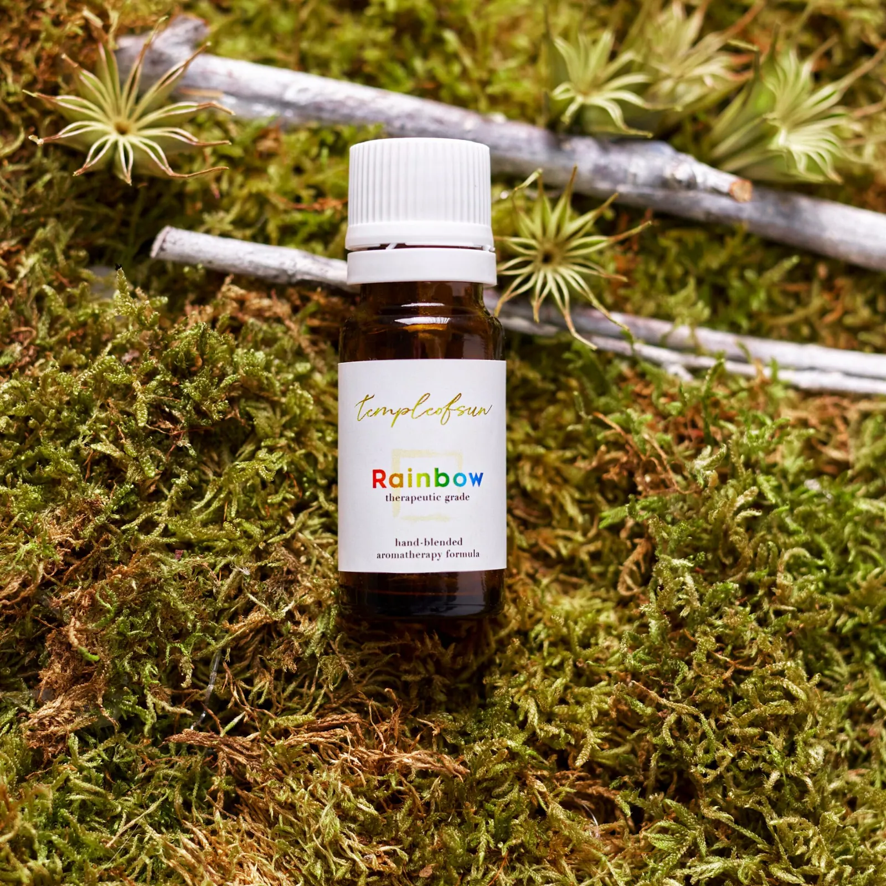

The Rainbow Collection
eighteen blends, made around feelings
The Rainbow Collection was born in 2020, after a mind-bending 12-hour New Year's Eve ceremony in a hidden ashram in India.
The night was pure devotion: Bhajans, Kirtans, 108 rounds of the Hanuman Chalisa, Yoga Nidra, Havan, meditations. Wave after wave of energy. By the end, I was overflowing with Prana, awake for 36 hours, high on life itself.
On the morning of January 1st, I followed an inner pull to the ocean. For ten days, I sat on the beach for hours each day, channeling the Rainbow formulas: receiving downloads of wisdom, flashes from past lives, streams of inspiration. It felt surreal, as if something ancient was moving through me.
When COVID began, I returned to the yoga retreat in the Portuguese mountains where I lived. The rest of that year became a time of quiet alchemy: refining the blends, exploring their synergy, scent, and energy, and testing them with the souls around me.
During this time, my dear friend @zhenyaland offered to bring the Rainbow magic to life: designing the website, logo, and labels, and shaping the visual soul of templeofsun. Since then, she's been the co-parent of this creation, the unseen co-weaver of its beauty. Forever grateful for your love, support, and creative light.
Togetherness is the vibration
touch a blend to meet its own plants, and the family it belongs to
74 oils, one family
every blend a star of its own
Every thread on this map is real: it means two blends name the same plant in their formulas. Touch any star to meet a blend's own plants, see what grows only there, and the family it belongs to. Rainbow sits at the centre, because it carries the oils the whole collection shares.
Tap any bottle for its story
ingredients, rituals and Peter's personal tips, one click away
Not sure which one? Let me guide you→Nothing here carries that feeling; Rainbow carries them all.